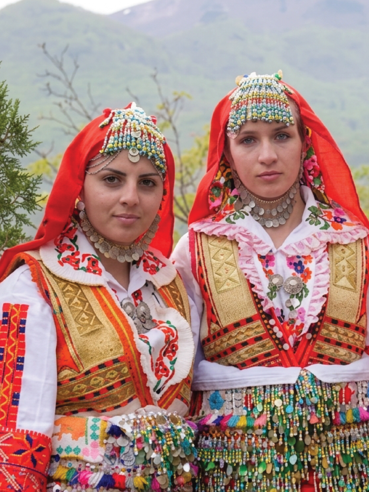

In Injevo, near Radoviš, the girls sing as they gather living branches from a willow tree. It is Saturday, April 27, 2024. Researchers Jose Antonio Lorenzo Tamayo and Meryem Madili are following the Lazarki on a circuit of village monasteries that will last until sunset.
At the chapel doorway, each girl attaches a willow branch. Asked about the gesture, villagers explain that they saw earlier generations do it. They no longer know why. Inside, the girls sing before the patron saint’s icon and offer more willow, then continue to the next monastery.
The next morning, they divide into smaller groups and visit homes. Each household names the people who should receive a song. The girls sing, accept gifts and move on. Money is pooled and later divided among the performers.
Lazarki takes place around Lazarus Saturday and Palm Sunday, when girls and young women carry blessings through Macedonian villages in song. The route, clothing and dances differ from place to place. Injevo’s two-day procession is one local form of a practice recorded in the Struga area as early as 1861.
Taking part requires learning whom to sing for, where to stand, when to move and how to enter a household. Older women and experienced performers teach the girls; families preserve and pass down clothing. The willow at the doorway suggests how this knowledge can endure: an action may remain familiar long after its explanation has faded.
A song for each person
A household visit calls for a repertoire large enough to recognize the people who live there. The Miladinov brothers’ 1861 collection includes Lazar songs from the Struga area for a small child, an unmarried man, a bride, a woman with sons, a wealthy man and an elderly man. One addresses a childless woman whose husband is away. Age, marriage, absence and family circumstance determine what is sung.
The accompanying account describes girls gathering by neighborhood and choosing one as a ceremonial nevesta, or bride. Their songs change according to the person they encounter. A family receives a blessing addressed to its particular members, with their different positions and hopes acknowledged in turn.
In historical accounts, households give food, eggs, cloth, clothing or money. The performers share what they collect. In Injevo in 2024, the researchers also observed the distribution of pogača, ritual bread: after the singing, the girls handed pieces to the people gathered outside the house.
Mourning changes the visit. Older descriptions record groups avoiding homes where someone had recently died. In the Injevo fieldwork, a mourning household gave bread for distribution without receiving the sung blessing. The family decided when its mourning period would end.
The household therefore helps determine the performance. Its members supply the names, their circumstances guide the songs, and their gifts complete the exchange. This relationship becomes especially visible in Tašmaruništa, near Struga. Petar Avramovski records that after “Kito Mito Nevesto,” the girls begin an oro, a chain dance, led by a girl related to the receiving household. Kinship determines who takes the lead.
Learning a place in the group
Preparations begin before the procession, with songs to rehearse, baskets to prepare and festive clothing to assemble. Historical accounts commonly describe groups of four to eight unmarried girls, often in their teens, though younger children and older unmarried women also participated. The oldest or most accomplished performer might lead the group, greet a household or speak on its behalf.
Singing and movement have to be learned together. Performers may alternate in pairs or groups, one beginning a phrase and another answering or repeating it. Reported meters include 2/4 and 7/8. Rodna Veličkovska distinguishes songs for walking, standing, and turning or dancing: a change in movement can also mean a change in repertoire.
Nor does every Lazar dance have the same character. Mihajlo Dimovski’s 1973 study of Struga and its surrounding villages records “Brala moma, Lazare, zelenika,” “Kito Mito nevesto” and “Vijur Vijur Gajdanot.” The movement described for “Brala moma zelenika” is a calm open circle traveling to the right, without leaps. Elsewhere, accounts describe stamping, jumps, interlacing formations and turns.
A position in the dance could also mark a change in a girl’s life. In the Struga area, a participant approaching marriage could take the final place in the chain for what was understood as her last performance of that ritual dance as an unmarried girl.
Clothing made that approaching change visible. Some participants wore garments or ornaments associated with brides, sometimes for the first time. Dance scholar Filip Petkovski reads this borrowing of bridal dress as an initiatory element of Lazarki. The connection is persuasive where the clothing and the final dance point toward marriage; it need not explain every participant’s experience.
Struga-area descriptions include white shirts, woven aprons, waistcoats, headcloths and chains of coins. Some aprons have vertical stripes, colored pompoms, sequins and lace. An older maxim cited in the literature held that a Lazarka should not sing in old clothing. Preparing a complete, clean festive outfit was part of preparing to perform.
In Injevo in 2024, participants wore embroidered white garments, dark patterned aprons, narrow vests, thick socks and opanci, traditional leather shoes. Their hair was braided, with a red rose above the right ear. One girl showed the researchers a beaded necklace resembling a snake. Family informants recalled women commissioning costumes and passing them down through generations.

Bridal appearance was only one possibility. Historical accounts from Kozjak describe a girl leading the procession in male clothing, carrying a yatagan or knife. In parts of the northeast, the first two girls carried umbrellas; in Prespa, a leading Lazarka could knock on doors with a willow staff. These objects distinguish particular roles. They cannot all be assigned a single meaning or origin.
The girls had responsibilities as well as ceremonial clothes. They addressed adults, remembered the songs appropriate to them, kept their places in the formation and handled gifts. Learning Lazarki meant becoming capable of carrying out those tasks in public.